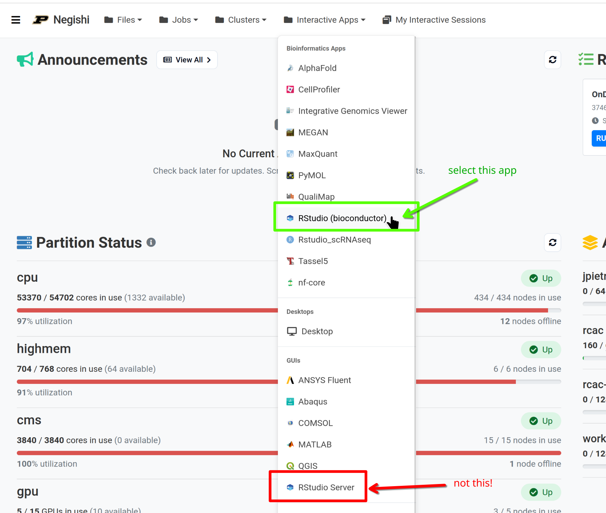
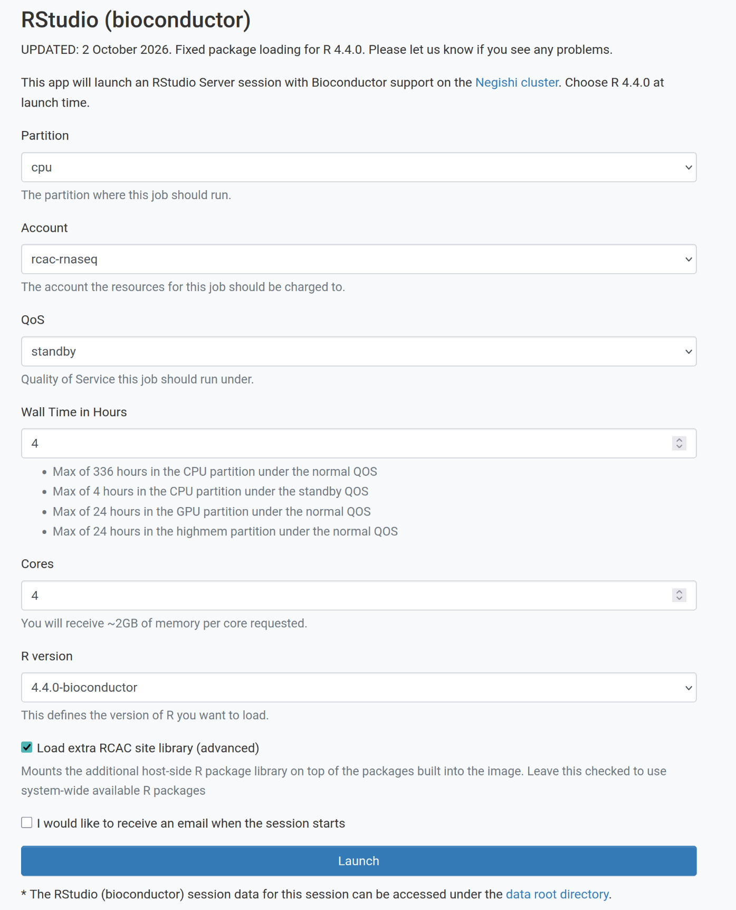

Summary and Setup
This is a new lesson built with The Carpentries Workbench.
Instructors
Arun Seetharam, Ph.D.: Arun is a lead bioinformatics scientist at Purdue University’s Rosen Center for Advanced Computing. With extensive expertise in comparative genomics, genome assembly, annotation, single-cell genomics, NGS data analysis, metagenomics, proteomics, and metabolomics. Arun supports a diverse range of bioinformatics projects across various organisms, including human model systems.
Michael Carlson, Ph.D.: Michael is a Senior Computational Scientist at Purdue University’s Rosen Center for Advanced Computing (RCAC). Michael has a background in computational physics, specifically hypersonic materials. He also leads many introductory workshops in the High-Performance Computing domain.
Schedule (10/06/2026)
| Time | Session |
|---|---|
| 8:30 AM | Arrival & Setup |
| 9:00 AM | Introduction to RNA-seq Analysis (Episode 1): What RNA-seq measures, experimental design and biological replicates, quantification strategies, and an overview of the workflow (QC → alignment → quantification → DE) |
| 9:45 AM | Data Preparation & Quality Control (Episodes 2-3): Project layout, reference genome, annotation and FASTQ files, running FastQC and MultiQC, and deciding whether trimming is needed (fastp shown for reference only) |
| 10:30 AM | Break |
| 10:45 AM | Read Alignment & Quantification (Episode 4A): Checking strandedness with Salmon, building a STAR index, mapping with a SLURM array job, and generating gene-level counts with featureCounts (Episode 4B, Kallisto, covered conceptually only) |
| 12:00 PM | Lunch Break |
| 1:00 PM | Differential Expression Analysis (Episode 5A): Importing counts into R, normalization, exploratory plots (VST, distance heatmaps, PCA), and identifying significantly differentially expressed genes |
| 2:15 PM | Break |
| 2:30 PM | Visualization & Interpretation (Episodes 5A-6): Volcano plots, summary tables, and exporting annotated results. Introduction to gene set enrichment methods (ORA/GSEA) with pointers to explore independently. |
| 3:30 PM | Wrap-Up & Discussion: Review of workflow, troubleshooting common issues, recommended next steps |
| 4:00 PM | End of Workshop |
The full lesson is longer than one day. Episodes 4B (Kallisto), 5B (DESeq2 on Kallisto output), and the remainder of Episode 6 are self-paced: they are published on this site and use the same data and setup as the live sessions.
Prerequisites
This workshop assumes:
- Basic Linux/command-line skills: navigating directories, running commands, editing files
- Basic R skills: installing packages, reading/writing data, creating plots
- A Purdue career account with access to the Negishi cluster
- An SSH client: terminal (macOS/Linux) or MobaXterm/PuTTY (Windows)
- Genomics knowledge: understanding of genes, transcripts, and genome structure
No prior RNA-seq analysis experience is required.
Scope of this workshop
This workshop teaches a standard bulk RNA-seq workflow, from raw reads to differentially expressed genes and enriched pathways, using a specific dataset and toolset:
-
Platform and library type: Illumina HiSeq 2000,
paired-end 51 bp reads. The library is unstranded:
Salmon reports library type
IUin Episode 4A, so featureCounts runs with-s 0and Kallisto runs without a strand flag. - Organism and reference: Mouse (Mus musculus, C57BL/6). GRCm39 primary assembly genome, GENCODE vM38 basic gene annotation (GTF), and GENCODE vM38 transcript sequences.
- Dataset: GEO GSE71176, the p53-mediated response to ionizing radiation in mouse B cells (Tonelli et al. 2015). We use 8 wild-type samples: 4 mock (SRR2121778-81) and 4 irradiated, 7 Gy and harvested 4 hours later (SRR2121786-89). Each sample is subsampled to 20 million read pairs so that every step finishes within the workshop.
Toolchain
| Step | Tools | Where it runs | Episode |
|---|---|---|---|
| Download reference and reads |
wget, SRA Toolkit
(fasterq-dump, shown but not run) |
Negishi shell | 2 |
| Read quality control | FastQC, MultiQC (fastp shown for reference) | Negishi, interactive job | 3 |
| Strandedness check | Salmon (--libType A) |
Negishi, interactive job | 4A |
| Genome-based quantification | STAR, featureCounts (Subread), MultiQC | Negishi, SLURM batch jobs | 4A |
| Transcript-based quantification | Kallisto, tximport | Negishi, SLURM batch jobs and R (r-rnaseq
module) |
4B |
| Differential expression | DESeq2 (with apeglm shrinkage), vsn, pheatmap, ggplot2 | RStudio on Open OnDemand | 5A, 5B |
| Gene set enrichment | clusterProfiler, enrichplot, org.Mm.eg.db, msigdbr (GO, KEGG, MSigDB Hallmark, GSEA) | RStudio on Open OnDemand | 6 |
Command-line tools are loaded as modules with
module load biocontainers followed by the tool module (for
example module load star).
Two quantification tracks
Episodes 1-3 and 6 are shared. After QC the lesson splits into two parallel tracks that both end in a DESeq2 analysis:
| Track | Episodes | On 10/06/2026 |
|---|---|---|
| Genome-based: STAR + featureCounts, then DESeq2 | 4A, 5A | Taught live, hands-on |
| Transcript-based: Kallisto + tximport, then DESeq2 | 4B, 5B | 4B introduced conceptually; 4B and 5B are self-paced |
Episode 6 runs on the DESeq2 results from either track.
What you will be able to do
By the end of the workshop you will be able to:
- Organize an RNA-seq project on an HPC cluster and obtain matching reference files.
- Assess read quality with FastQC and MultiQC and decide whether trimming is needed.
- Determine library strandedness, map reads with STAR, and count reads per gene with featureCounts using SLURM batch and array jobs.
- Run a DESeq2 analysis in R: exploratory QC (VST, sample distances, PCA), testing, fold change shrinkage, volcano plots, and an annotated results table.
- Run and interpret over-representation analysis and GSEA on your DE results.
What is not covered
- Wet-lab work: sample collection, library preparation, and sequencing
- De novo transcriptome assembly (for example Trinity) or genome-guided transcript reconstruction
- Isoform-level analysis: differential transcript usage, alternative splicing, and transcript-level DE with sleuth
- Long-read, single-cell, or spatial transcriptomics
- Batch correction methods (ComBat-seq, sva) beyond a brief mention
- Interactive analysis tools and dashboards (for example Shiny apps or iDEP)
See the Reference page for papers and resources on these topics.
SSH Setup
You need SSH access to Negishi to copy the workshop data and to run the command-line steps in Episodes 2 to 4B. Follow the instructions for your operating system below.
Connecting to the Cluster
You will connect to negishi.rcac.purdue.edu with your
Purdue career account username and password, followed by Purdue
two-factor authentication. Choose the instructions for your operating
system below.
MobaXterm (recommended)
- Download and install MobaXterm
- Open MobaXterm and click Session > SSH
- Set Remote host to
negishi.rcac.purdue.edu - Check Specify username and enter your Purdue career account username
- Click OK and enter your password when prompted
- Complete Purdue two-factor authentication
PuTTY
- Download and install PuTTY
- Set Host Name to
negishi.rcac.purdue.edu, Port to22, and Connection type to SSH - Click Open, then enter your Purdue career account
username at the
login as:prompt - Enter your password and complete Purdue two-factor authentication
Once logged in, check that your scratch directory variables are set.
The episodes use $SCRATCH and this page uses
$RCAC_SCRATCH; both should print your scratch path:
OUTPUT
/scratch/negishi/your_username
/scratch/negishi/your_usernameData Setup
Copying the workshop data
The workshop data is pre-staged on Negishi. Copy it to your scratch directory:
This creates ${RCAC_SCRATCH}/rnaseq-workshop, the
working directory every episode uses. It will copy:
-
data/, raw reads: 16 FASTQ files, one R1 and one R2 per sample, subsampled to 20 million read pairs each:-
WT_Bcell_mock_rep1_R1.fastq.gz…WT_Bcell_mock_rep4_R2.fastq.gz(mock, 8 files) -
WT_Bcell_IR_rep1_R1.fastq.gz…WT_Bcell_IR_rep4_R2.fastq.gz(irradiated, 8 files)
-
-
data/, reference files (uncompressed, GENCODE vM38 on GRCm39):-
GRCm39.primary_assembly.genome.fa: genome sequence, used to build the STAR index -
gencode.vM38.primary_assembly.basic.annotation.gtf: gene annotation, used by STAR, featureCounts, and to buildtx2gene.tsv -
gencode.vM38.transcripts.fa: transcript sequences as downloaded -
gencode.vM38.transcripts-clean.fa: transcript sequences with simplified headers, used by Salmon and Kallisto
-
-
data/, sample and annotation tables:-
SRR_Acc_List.txt: the 8 SRA run accessions -
mart.tsvandannot.tsv: Ensembl gene annotation (symbols, biotypes, descriptions) loaded in Episodes 5A and 5B
-
You will create scripts/, results/, the
indexes, and all analysis outputs yourself as you work through the
episodes.
Verifying the data
BASH
ls ${RCAC_SCRATCH}/rnaseq-workshop/
ls ${RCAC_SCRATCH}/rnaseq-workshop/data/
ls ${RCAC_SCRATCH}/rnaseq-workshop/data/*.fastq.gz | wc -l
du -sh ${RCAC_SCRATCH}/rnaseq-workshop/dataThe FASTQ count must be 16. The total size of
data/ should be about 19 GB.
Scratch is temporary
Negishi scratch is not backed up, and files that are not accessed for a while are purged automatically. Copy the data shortly before the workshop, and move anything you want to keep (count tables, DE results, plots) to your home directory or your group’s Depot space afterwards.
Completed results (backup)
A completed version of the workshop directory is available at:
/depot/workshop/data/rnaseq-workshop_resultsIt has the same layout as your
${RCAC_SCRATCH}/rnaseq-workshop directory, without the
FASTQ and reference files you already have. Use it only if you
are unable to complete the exercises during the workshop. Do
not copy the whole directory; copy only the file you need into the
matching location in your own directory. For example, to start Episode
5A without finishing Episode 4A:
BASH
mkdir -p ${RCAC_SCRATCH}/rnaseq-workshop/results/counts
cp /depot/workshop/data/rnaseq-workshop_results/results/counts/gene_counts_clean.txt \
${RCAC_SCRATCH}/rnaseq-workshop/results/counts/List what is available with
ls /depot/workshop/data/rnaseq-workshop_results/results.
Starting RStudio on Open OnDemand
Episodes 5A, 5B, and 6 run in RStudio through Negishi’s Open OnDemand (OOD) web portal.
Step 1: Log in to Open OnDemand
Open your browser and go to gateway.negishi.rcac.purdue.edu. Log in with your Purdue career account and complete Purdue two-factor authentication.
Step 2: Launch RStudio (Bioconductor)
From the top menu bar, click Interactive Apps. Under Bioinformatics Apps, select RStudio (bioconductor).
Choose the correct app
Select RStudio (bioconductor) under Bioinformatics Apps, not RStudio Server under the GUIs section. The Bioconductor app provides the packages used in Episodes 5A, 5B, and 6.

Step 3: Fill in the resource request
| Field | Value |
|---|---|
| Partition | cpu |
| Account | rcac-rnaseq |
| QoS | standby |
| Wall Time (hours) | 4 |
| Cores | 4 |
| R version | 4.4.0-bioconductor |
| Load extra RCAC site library (advanced) | ☑️ |

Why these values:
- Account, partition, and QoS match the SLURM jobs in Episodes 2 to 4B, so all your work runs under the same allocation.
-
4 hours is the longest wall time the
standbyQoS allows on thecpupartition, and covers the afternoon session. For self-paced work, start a new session when one expires. -
4 cores gives about 8 GB of memory (the form
allocates roughly 2 GB per core), which is enough for DESeq2 on 8
samples, tximport on 8 Kallisto runs, and the enrichment analyses in
Episode 6. If R reports that it cannot allocate memory (most likely
during
simplify()orgseGO()in Episode 6), relaunch with 8 cores (about 16 GB).
After the workshop, if you no longer have access to
rcac-rnaseq, use your own group’s account.
Click Launch to submit the job.
R package installation (skip this section if using OOD)
The packages are provided by the RStudio (bioconductor) app on Open OnDemand. Install them yourself only if you want to run the R episodes on your own computer or in a different R installation. The list below is every package the episodes load, grouped by purpose. The same list is load-tested in the OOD app (R 4.4.0, Bioconductor 3.20) before each delivery; last checked on 2026-10-02 (all 19 packages load, R 4.4.0, Bioconductor 3.20).
R
# Install BiocManager if not already installed
if (!requireNamespace("BiocManager", quietly = TRUE))
install.packages("BiocManager")
# CRAN packages
install.packages(c(
"tidyverse", # readr, dplyr, ggplot2, tibble (Episodes 4B, 5A, 5B, 6)
"RColorBrewer", # heatmap colors (5A, 5B)
"pheatmap", # sample distance heatmaps (5A, 5B)
"ggrepel", # labels on PCA and volcano plots (5A, 5B)
"reshape2", # reshaping counts for plotting (5B)
"hexbin", # meanSdPlot() in vsn (5A)
"msigdbr" # MSigDB Hallmark gene sets (6)
))
# Bioconductor packages
BiocManager::install(c(
# Transcript-level import (4B)
"tximport",
# Reading Kallisto abundance.h5 files with tximport (4B)
"rhdf5",
# Differential expression and QC plots (5A, 5B)
"DESeq2", "apeglm", "vsn",
# Gene annotation (05, optional biomaRt spoiler)
"biomaRt",
# Enrichment analysis (6)
"clusterProfiler", "enrichplot", "org.Mm.eg.db"
))
# Check that every package loads
pkgs <- c("tidyverse", "RColorBrewer", "pheatmap", "ggrepel", "reshape2", "hexbin", "msigdbr",
"tximport", "rhdf5", "DESeq2", "apeglm", "vsn", "biomaRt",
"clusterProfiler", "enrichplot", "org.Mm.eg.db")
missing <- pkgs[!vapply(pkgs, requireNamespace, logical(1), quietly = TRUE)]
if (length(missing)) message("Missing: ", paste(missing, collapse = ", ")) else message("All packages load")
OUTPUT
All packages loadVersion notes
-
msigdbr: Episode 6 uses the current interface,
msigdbr(species = "Mus musculus", collection = "H")and thencbi_genecolumn, which needs msigdbr 10 or later (the OOD app has 26.1.1). Older tutorials usecategory = "H"andentrez_gene. msigdbr downloads the gene set data the first time it runs, so it needs internet access. -
KEGG and biomaRt query online services
(
enrichKEGG()in Episode 6, the annotation spoiler in Episode 5A), so those steps need internet access from wherever R is running.
These packages appear in the episode text but no episode code calls them. Install them only if you want to explore those topics.
R
# Shiny app for the experimental design challenge in Episode 1 (GitHub only)
install.packages("remotes")
remotes::install_github("csoneson/ConfoundingExplorer")
# Alternatives and follow-ups mentioned in Episodes 1, 4B, and 5A
install.packages("ashr") # lfcShrink(type = "ashr")
BiocManager::install(c("Biostrings", "sva", "edgeR")) # readDNAStringSet(), ComBat-seq, edgeR